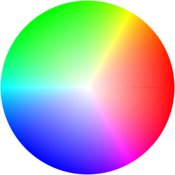
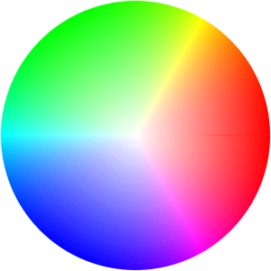
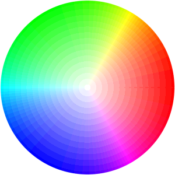
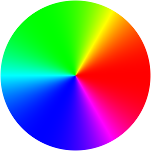
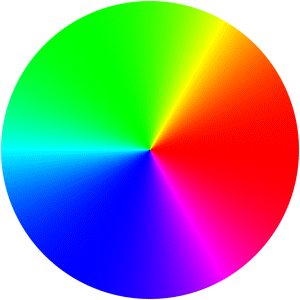

RGBA4444 変換で劣化しない画像を ImageMagick で作る
- RGB444 変換で劣化しない画像を ImageMagick で作る
前回の記事では RGBA4444 のディザに失敗しました。ImageMagick は透明度を含むんだ時のディザ処理が苦手のようです。
以下のサイトで紹介されている、色のチャネル(RGBA)毎に個別にディザをかける方法だとうまくいきます。
- [unity][cg_tools] RGBA4444に変換できるツール
変換方法 (ブログを参考に) RGBA4444
テスト画像
$ convert -size 300x900 gradient:'#FFF-#0FF' -rotate 90 \
-matte -channel a -fx "u*j/h" \
-alpha set -virtual-pixel Transparent +distort Polar 149 +repage \
-rotate 90 -set colorspace HSB -colorspace RGB \
gradient_hue_polar-transparent.png

パレット画像の準備
$ convert -size 16x16 gradient:black-white gray16palette.png
参照した記事では 0xfff を 0xf0f0f0 と 0xffffff のどちらで表わそうか迷ってますが、最大値の 0xfff は 0xffffff でしか表現出来ないので、後者を採用してます。
尚、PNG は仕様で後者である事が示されています > https://www.w3.org/TR/PNG/#12Sample-depth-scaling
実行コマンド
$ convert gradient_hue_polar-transparent.png -channel RGBA -separate \
\( -dither FloydSteinberg -remap gray16palette.png \) \
-channel RGBA -combine rgba4444.png

尚、ディザ変換をせずに Unity 等に RGBA4444 指定で渡した場合は、以下のようになるはずです。
$ convert gradient_hue_polar-transparent.png -depth 4 depth4.png 
これよりは予め自分でディザをかけた方が良いはずです。
テスト２ (RGB444)
RGB 画像でも同じ方法で変換できます。
$ convert -size 300x900 gradient:‘#FFF-#0FF’ -rotate 90透明度がない画像は -channel RGB でも同じ結果を得られます。
-alpha set -virtual-pixel Transparent +distort Polar 149 +repage
-rotate 90 -set colorspace HSB -colorspace RGB
gradient_hue_polar.png  $ convert gradient_hue_polar.png -channel RGBA -separate
( -dither FloydSteinberg -remap gray16palette.png )
-channel RGBA -combine rgb444.png 
尚、今回の方法は原色が強く出すぎる傾向があるので、前回説明した方法( http://blog.awm.jp/2016/07/21/rgb444/ )の方が良い結果が得られそうです。
追試
RGB と A で分離して、RGB は前回の方法、A は今回の方法の組み合わせで実験しました。
- RGBA4444 の追加実験
RGBA をバラバラにする今回の方法と結果が変わらないので、唯の参考です。
参考 URL
- Unityやるには必須！RGBA画像減色の基礎をまじめに書いてみた
- Unityで、もっとキレイな16bitカラーテクスチャを使おう！
- Dither using Pre-Defined Color Maps
- Gradients in other Colorspaces
- PNG Specification 12.5 Sample depth scaling